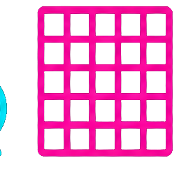

打破死板排版與單向輸出，開啟極致互動與自動化的新時代
三師爸 Sense Bar · 未來簡報系列
為什麼我們該挑戰 PowerPoint / Keynote？
為什麼這是高算力時代最優的簡報完全體？

當 AI 代理人能幫你處理排版與設計，你唯一需要做的，就是專注你的核心內容。
謝謝大家 · 簡報網址：https://svn12.github.io/Gemini/future-html-slides/